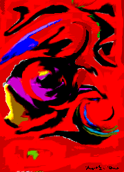

うそ。だまされないでね。

イイジャ ヌワール作
「沈黙の暗闇」
１９２４～２８年作成。イイジャ ヌワールの作品は第二次世界大戦により、ほとんどの作品が失われた。しかし、奇蹟的に残ったこの作品は残るべきして残ったものであろう。イイジャ ヌワールの作品は当時はまったくの無価値とされ、その悲しみと憎悪がこの作品にぶつけられたと解釈されている。
しかし、１９４０年の彼の死去後に彼の土地から石油が堀当てられてから、彼の作品は「幸福の絵」とされ、一部の投資家の間で人気となり、その噂が多くの評論家を動かし、芸術的価値も見い出された。彼は彼独特のイイジャディズムを開花させ、特に赤という色を愛し、この作品の赤色は大量のねずみの血を使用したということでも有名である。彼の作品は盗難、紛失、保存状態が悪い、山羊にくわれた、燃えた、子供が上から絵をかいてしまった、８等分された、などの理由から完璧な状態で現在に残っているものは３点しか確認されていないため、稀少価値が高いとされる。
また、昨年、日本蛇内銀行がこの作品の贋作を４０億円で購入したことでも注目を集めた作品である。
＜説明＞
どうじゃ。ここまで、やられると、ちょっと本当かと思うじゃろ。絵の説明よりも絵の稀少価値に重点をおいた説明じゃから、「ひょっとしたら、価値があるのか？」と思ってしまうじゃろ。これが言葉の面白さ、うその楽しさじゃ。また、理解されない単語というものも必要じゃ。「イイジャディズム」なんぞ、わしの造語じゃからな。わけのわからんことをいわれると、「自分はわからんけど、わかる人はわかるのかなあ？」などと知的な人にはどうしてもかなわないと思ってしまう現代の人間の潜在意識を利用したうそじゃ。では、次のステップでさらにわけのわからんことをいってみよう。
次のうそ美術品